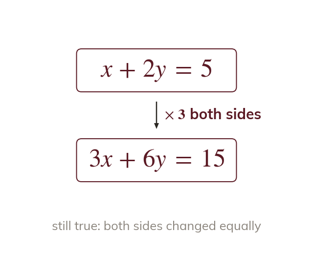
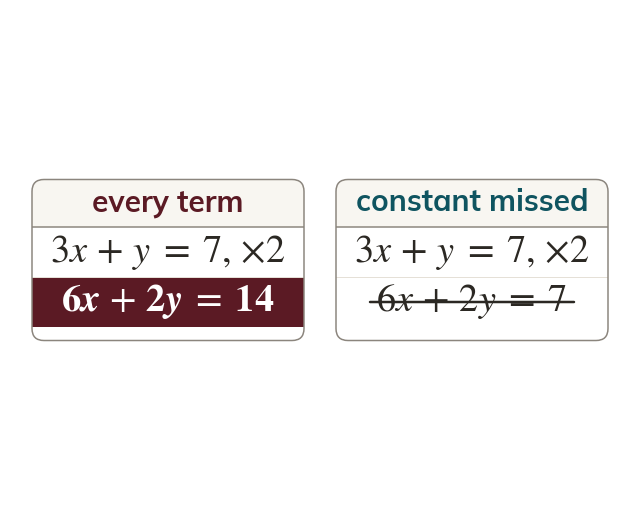
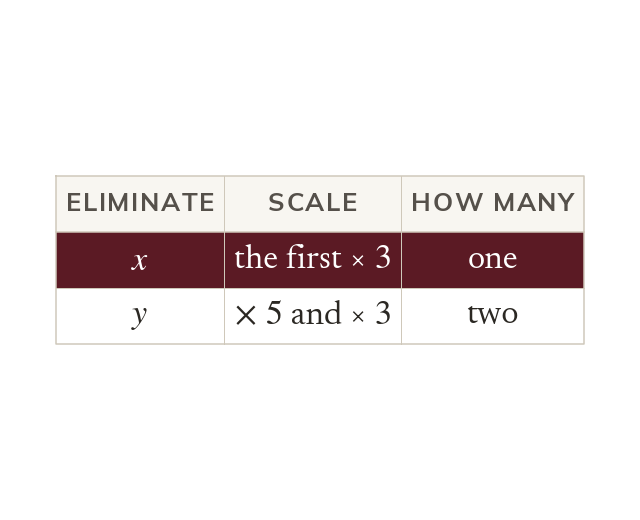
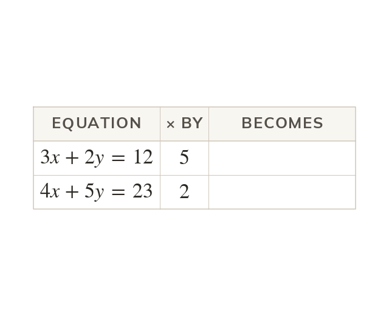
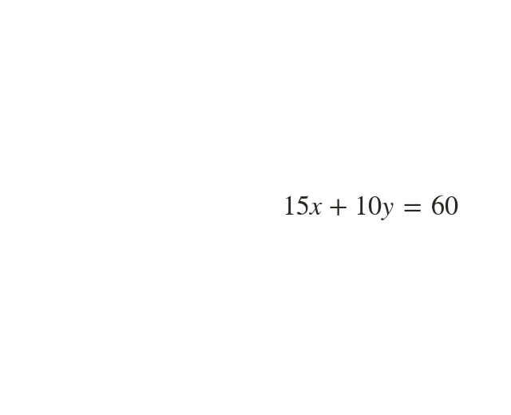
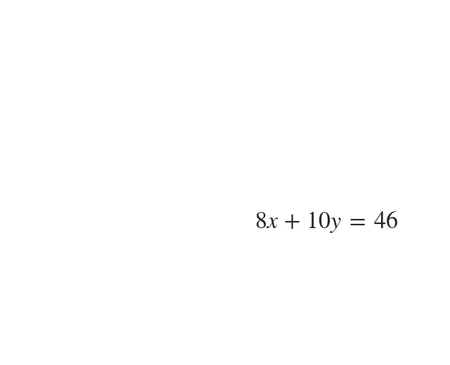
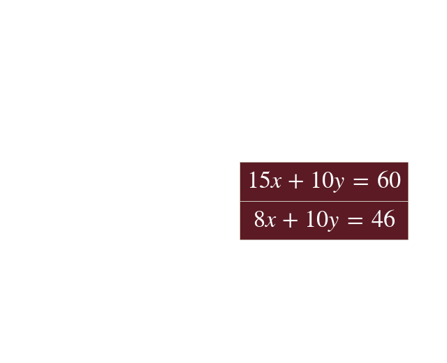

Scaling keeps an equation true
Multiplying an entire equation by any number keeps it true, since both sides change equally. So one or both equations can be scaled until a variable's coefficients match.
Elimination only works when a variable has matching coefficients. Today is about making that happen when it is not already true, by scaling an equation up.
Work down the page at your own pace. Write every answer in your book first, then click to check it.
Read each card, then follow the worked examples one step at a time.

Multiplying an entire equation by any number keeps it true, since both sides change equally. So one or both equations can be scaled until a variable's coefficients match.

Every term must be multiplied, including the constant on the right-hand side. The LCM of the two coefficients gives the smallest numbers to work with.
Pick an answer. If it's wrong, the feedback tells you which mistake it was.
Read each card, then follow the worked examples one step at a time.

Either variable may be chosen for elimination, and either equation, or both, may be scaled. Choosing the coefficient pairing that gives the smallest numbers keeps the arithmetic manageable.




Sometimes neither coefficient divides into the other. Then scale both equations, each by a different number.
Pick an answer. If it's wrong, the feedback tells you which mistake it was.
Finished? Next lesson: 9.14.5 Elimination Problem Solving.
For each skill, tap the one that is true for you today. Your Revise pages start with anything you mark Not yet.
Your ratings are saved on this device only.
Log in, then search for a code to practise that skill.
Videos, worksheets and more on each part of this lesson.